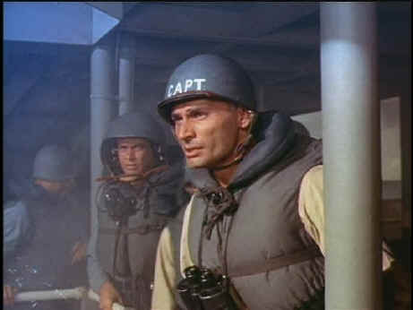

Good Times/1956/114m/Cropped 1.33
The emotions on the voyages of the Belinda are played at a relatively subdued level. Some of the conflicts are poorly established thereby robbing the resolutions of much meaning. There is even an unfortunate section in which one of the officers is transported back to his wife through sense memory as he reads a long awaited letter. It seemed like this segment was thrown in to add some sense of a female presence, but it simply stops throws the voyage into a dead stop.
 |
Chandler rarely changes expression as Captain Jed Hawk©Good Times |
Jeff Chandler is pretty
one-dimensional as Captain Jedediah Hawks. This is the kind of role that John Wayne could
have made a lot more interesting. While Chandler does have a strong screen presence, he
lacks the power that pops off the screen. Lots of familiar faces offer support. George
Nader has the chief duties as Lt. Dave MacDougall. Nader has even less range than Chandler
and certainly less charisma. Former Tarzan Lex Barker does fine as the Executive Officer
with a polished smile. Richard Boone hasn't quite found his acting range as one of the
officers and tough Charles McGraw bares his chest quite a bit.
Director Joseph Pevney handles the action scenes quite well. The
major attack on the Belinda is exciting and in your face. But he fails to drive his actors
in the same way Captain Hawks managed to get the best from his crew. The color photography
by William Daniels is quite lovely. This is a solid B production and quite enjoyable.
The DVD indicates that Away All Boats is modified from its
original theatrical aspect ratio. However, it was shot VistaVision which provided for
theatrical showing a various screen sizes. I never detected any extreme cropping of the
image. Some compositions are cramped but the sweep of the film does not suffer. The color
does shift from time to time, but it still has the richness of an artist's palette. The
image is consistently sharp with little or no noticeable edge enhancement. Night scenes
appear to have been shot "day for night" and they have a particularly elegant
look to them, which is preserved on the DVD. Scratches and dirt are evident of the
transfer elements but again not to the point of distraction. The mono sound is thin at
best and in several scenes suffers from slight distortion in the dialogue. It's only a
minor distraction and of short duration. The menu is bare bones with only chapter stops
and language selection available.